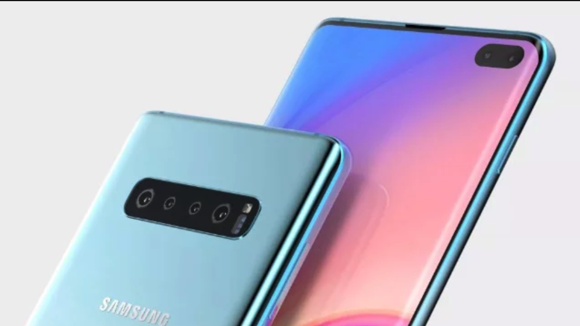
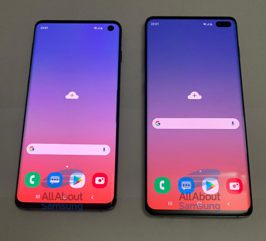
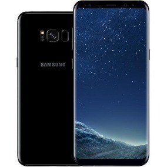

Tecnologia Celular
Samsung
Samsung Electronics (SEC, en coreano: 삼성전자, KRX: 005930, KRX: 005935, LSE: SMSN, LSE: SMSD) es una empresa multinacional electrónica y de tecnologías de la información con sede en Samsung Town, Seúl, Corea del Sur.2 Es la principal subsidiaria del Grupo Samsung. Con plantas de ensamble y redes de venta en 65 países, Samsung Electronics cuenta con más de 200.000 empleados

En el año 2009, la compañía logró la posición dominante a nivel mundial como el mayor fabricante de productos IT sobrepasando a Hewlett Packard, el líder anterior.4 Sus ingresos por ventas en las áreas de pantallas LCD y LED, así como de chips de computadora, ponen a Samsung Electronics como la compañía número uno a nivel mundial en este segmento

Algunos de los productos de Samsung Electronics más conocidos son los televisores con retroiluminación sobre la base de LED, televisores LCD convencionales y la línea de productos Galaxy, tanto smartphones como tablets. De hecho, con el modelo de teléfono Galaxy S, la línea de smartphones de Samsung Electronics ha mantenido la segunda mejor posición en el mercado mundial por algún tiempo.6 La línea de tablets, en tanto, fue sacada al mercado como una competencia directa con el iPad de Apple Inc.
